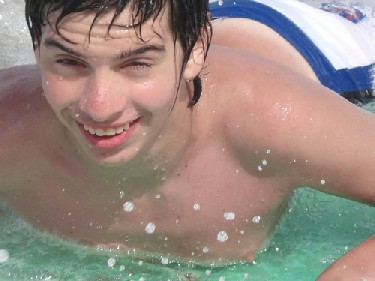
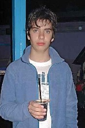
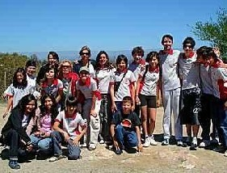
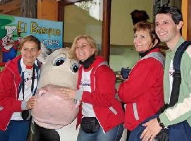
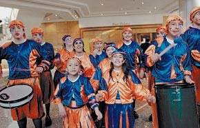
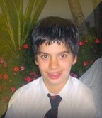
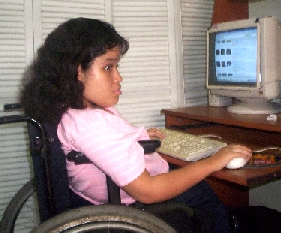

Aportes
de los Grupos Espina Bífida y/o Hidrocefálea y otras personas
con capacidades diferentes y discapacidades
Aportes
de los Grupos Espina Bífida y/o Hidrocefálea y otras personas
con capacidades diferentes y discapacidades
 Conversar, conseguir una vida más independiente. Los discapacitados podemos trabajar. ¿Qué te da vergüenza de tu discapacidad? más...
Conversar, conseguir una vida más independiente. Los discapacitados podemos trabajar. ¿Qué te da vergüenza de tu discapacidad? más...
Hace unos días una mamá me preguntó ,¿en qué momento, yo pensaba que era el tiempo de que un chico use la silla de ruedas?, no es la primera ves que me cuentan o preguntan sobre ese tema,
siempre les digo que la mejor persona que les puede contestar es, el medico,el kinesiologo.
Piensan que es mejor andar con la criatura en brazos, cuando podría estar sentada...no creo que sea bueno, ni para el ni para la familia.
Sé que no es fácil para ninguna madre o pdre el momento que su hijo use silla de ruedas: no soy mamá, pero si soy alguien a quien ya le dijeron que en algún momento
tendrá que usarla. Sí
para mi es dificil el tema,
mucho más para ustedes los padres.
Pero pienso que si tengo que depender de alguien que me lleve a donde yo quiera ir, me sentiría peor. Sé de mamas que se resistieron mucho a la silla de ruedas para su hija/o y el día que
los sentaron, se les hizo un nudo en el estómago.Pero con el tiempo, vieron que sus hijos estaban mejor, que aún así eran seres independientes, que podían estar en la calle ,
ir al baño, o lo más simple para los que aún andamos, ir de un lado a otro de la casa sin estar esperando que alguien lo alce y lo lleve.
Hace rato que queria hablar este tema; para mí la silla es algo que esta ahí, pero que aprendí que el día que me toque ,no digo que gritaré: ¡¡¡que alegria uso silla ! ,no; pero si pensaré
que esa es mi forma de seguir siendo independiente y eso es algo que hay que valorar mucho. Tía Mónica
CONVERSAR
CONSEGUIR UNA VIDA MAS INDEPENDIENTE
ESCRITO POR RAFAEL
ESCRITO POR ANA LUISA
Mónica
----------------------------------------------------------------------------------------------
Los Trasplantados podemos y debemos trabajar. Hola, bueno, como muchos sabrán soy trasplantado de ambos pulmones. Hoy comienzo este debate sobre el derecho que debemos tener
los trasplantados en tener un trabajo digno y no estar siempre arrodillándonos o dar lástima para que nos den uno merecido por las distintas aptitudes que tiene cada uno al igual que el
resto de la población.En la mayoría de los casos los que poseen trabajo lo tienen gracias a un "acomodo" o "cuña" ya sea política o de otra índole, aclaro, la mayoría pero no todos, y muchos
ya poseían trabajo antes del trasplante y lo conservan. Esto tiene que terminar, debemos ponerle freno a la ignorancia generalizada que tienen la mayoría de las personas por si un
trasplantado debe trabajar o no. Yo tengo aptitudes, se enfrentar cosas que otros quizás no tenga tanto valor o coraje en hacerlo. Puedo y debo trabajar, tengo ganas, tengo potencial,
y tengo un estudio lo cual deje en la mitad de la carrera, Lic en Administración Rural (que por mi estado de salud gravísimo tuve que abandonar de un día para el otro, y el año
entrante retomo).Los trasplantados somos cada día más, estamos gracias al avance de la ciencia médica cada día mejor. Hoy no se trasplantan adultos mayores como en los
primeros tiempos. Se trasplantan niños, adolescentes, adultos jóvenes o mayores. Y al pasar por lo más grave que acarrea un trasplante , luego al estar bien recuperado y en un
estado de salud óptimo (como es en mi caso) uno debe salir al mundo exterior, debe comenzar a vivir o revivir cosas que nunca pudo. Para eso es el trasplante también, no
solo para estar mejor de salud, sino para desarrollar una vida lo más normal posible. No somos tan diferentes, no somos extraterrestres, no contagiamos, no somos bichos,
solo nos cambiaron una parte de nuestro cuerpo para que siga funcionando bien nuestro sistema de salud. Sólo tenemos una diferencia, que es que debemos cuidarnos un poquito más
que el resto por nuestras defensas, que existe en otros casos, ejemplo personas en quimioterapia, personas que están pasando por una depresión, etc. Por favor, ayúdenos en lo que pueda,
ya por ejemplo comentándolo o publicando este debate en su muro nos ayuda muchísimo, porque lo que debemos hacer es cambiar la forma de pensar del resto. Es difícil, pero
no imposible. Danos una mano, hoy por mí, mañana por tí. Sólo debe ser escuchado para empezar a ser asimilado. Y si no funciona, nos tendremos que unir para hacer funcionar
la ley que está dormida.El trabajo es lo más digno que puede tener una persona, ¿por qué nosotros no podemos trabajar?, ¿por qué nos dan la espalda?, ¿de qué tienen miedo?.
"Si le das un pez a un hambriento le darás comida por el resto del día, si le enseñas a pescar le darás comida para el resto de su vida".
¿QUE TE DA MAS VERGÜENZA DE TU DISCAPACIDAD?
Seguros que todos sentimos vergüenza a algo que tenemos, por nuestra discapacidad.
A mi me daba vergüenza cuando era joven, mis piernas o mejor dicho, como caminaba, renga.
Como muchos me miraban eso me molestaba ,ni les cuento cuando alguien se acercaba y me preguntaba si tenia polio, eso me ponia mal, hasta contestaba mal, de lo mal q me ponia.
Con el tiempo fui cambiando y aprendi a reirme de mi misma y eso me ayudo mucho. Suelo reirme de las cosas que me pasan por mi forma de caminar ,etc..
Pero hace ya unos 5 años cuando empecé a usar pañal, fue lo peor que me podia pasar en ese momento, sentia q se me notaba, que todos se enterarian que lo tenia puesto,pero como
dicen los que me conocen ,tengo un poder de adaptarme a las cosas increible ,y con el tiempo ya no me intereso ni que se note (obvio que me cuido que no se note)y lo hablo el tema con
total naturalidad.
Creo que no es una discapacidad o enfermedad facil de llevar,tiene tantas cosas, las sondas ,el pañal, nos mojamos, el caminar rengueando,con baston,tripode,canadienses,silla, etc. y
a todas tenemos que adaptarnos y principalmente aceptando las cosas por que sabemos que asi podemos vivir y hacer una vida dentro de todo normal
¿VOS A QUE TENES VERGÜENZA,POR TU DISCAPACIDAD?
. . .
QUISIERA SER.
Autor: Elsa Patterer |
 Nuestro Simón (Panelli Kordysz) disfrutando el mar... |
 |
 |
 |
Hola....
Soy Simón...
el niño que fue discriminado por el
Colegio primario al que asistía por padecer un trastorno de aprendizaje.
Yo, no sé muy bien lo que es eso, solo se
que costó muchas lágrimas, mías y de mi familia - sobre
todo las de mi mamá-, que un directivo,
por capricho, pusiera todas las trabas para que yo no participara de mi ansiado
viaje de finalizacion de curso.
Costó mucho para que Mami me sacara del colegio y me pusiera alternativas,
como jugar al Basquet, cosa que me encanta, pero allí no
estaban mis compañeros de toda la vida, y como si fuera poco, a mi hermanito
mas chico,
en el mismo colegio, tambien le negaron el viaje, cualquiera pensaría
que ya no era contra mi, sino contra todos los que tienen uno u otro problema..y
somos considerados "Con capacidades especiales"
Saben que??? En catequesis me dijeron que no hay que mentir....pero a mi hermano,
su maestra le mintió, le dijo "no te llevamos por que
yo no voy y nadie puede encargarse de ti". No sería nada, si no
hubieramos ido con mi papa al día siguiente al lugar del campamento
"La Isla del Cerrito", la señorita de Marcelo estaba allí,
en la camioneta del Cura Director del Colegio: No entiendo, los chicos
no podemos mentir y los grandes si???? y si esta maestra decidió a último
momento ir a ese viaje a la Isla , por que no se acercó y
le dijo a mi mamá o a mi papá si mis hermanos podían ir???
Vivimos en una comunidad pequeña y Católica, mi casa sólo
queda
a una cuadra del Colegio. No entiendo a algunas personas. Dicen una cosa y hacen
otra.
Este año, -luego de un año de sólo Basquet- me inscribieron
en la escuela 30 "San martín" de Barranqueras. Me encontré
con
dos maestros inigualables, de esos que ven mi corazón y mis sentimientos,
y en el aula, yo soy una persona más,
respetada y comprendida.
Y es una escuela del Estado y tenía una maestra
de la Escuela Diferencial para mi solo, sin que mi mamá tuviera que pagar
y pagar
esas escuelas adonde iba antes y que me cansaban por que en ralidad, solo hacían
preguntas y no me tenían el cariño que yo siento aquí.
Lo más lindo llegó en Agosto. Mi mamá estaba operada así
que me acompañó mi hermana Gabriela, que es mi tesoro.
la quiero muuuuuuuuuuuucho por que ella me entiende y siempre está, siempre
me defiende. Ella me acompaño a Carlos Paz,
Espere dos años para poder viajar con amigos en viaje de fin de curso,
creo que valio la pena, aunque mi hermanita tuvo que
faltar tres días a la facultad. Lo pasamos tan lindo, que no se como
expresarlo. Solo puedo reirme y cada vez que me acuerdo
de algo, me río...Yo soy Simón, un niño discriminado por
unos y muy querido por otros.
Seño Susana, Profe Mario y Ernesto....GRACIAS!!!!!,
Gracias tambien a Sin Fronteras, que no tuvo problemas en llevarme.
Gracias, Papi y Mami..y sobre todo..Gracias Gabi....!!!
Este viaje me ayudó a crecer y a creer un
poco mas en las personas y hoy Uds. pueden decirle a esa gente que nos maltrataron
a mi y
a mis hermanos que no somos agresivos como ellos dicen...solo somos niños,
somos el Futuro.
No se si algún día pueda aprender a leer, pero, aprendo otras
cosas, y lo que aprendí de todo esto es que hay gente buena y gente que
no
quiere lo que le asusta, por que aunque no lo crean, el solo hecho de que no
pueda leer, los hacer verme como si yo fuera un monstruo.
El año pasado viaje solito a Buenos Aires con el Clun de Basquet, y ganamos
todo!!! y felicitaron a mi mamá por mi comportamiento.
Mis hermanos tambien están en la escuela 30, y nadie dice de ellos que
son agresivos, o los mandan a rendir sólo por que tuvieron una terrible
cirugía en el ojo.
Yo siempre le digo a mi mami que todo paso, y ella me mira con amor, porque
si hay algo que ella quiere, es que ningún niño tenga que
pasar por lo que pasamos nosotros.
Escrito con ayuda de mi hermana Gabriela.
Nestor Simón Panelli Kordysz
Me encanta este tema...a Uds. no?
. . . .
Testimonios de personas con discapacidad que demuestran que con los apoyos necesarios pueden vivir de forma autónoma, trabajar y formar una familia
A pesar de ser ciega de nacimiento, Marina Aquino realiza las compras para el hogar por su cuenta. Ella se desliza por las góndolas con una seguridad sorprendente engañando a otros
compradores que ni sospechan de su ceguera. Recuerda con precisión dónde se encuentra cada producto. Va palpando con la yema de sus dedos hasta construir la imagen en su cabeza.
"Si tiene agujeritos en la base, es Sprite; si tiene rayas finitas arriba, es 7Up, y si tiene rayas por debajo de la botella, es una Coca", explica con complicidad.
Marina admite que con los billetes se trata de pura confianza, ya que son todos iguales al tacto. En cambio las monedas tienen cada una su ranura específica. Por eso rápidamente distingue
una moneda de 5 de otra de 10 centavos. Ella le pregunta a la cajera de cuánto es cada billete del vuelto y los ordena de mayor a menor dentro de su billetera. Gustavo, antiguamente el
chofer del remise que la llevaba al local, fascinado de la destreza con la que Marina deambulaba por el supermercado, le decía antes de convertirse en su marido: "No entiendo cómo lo lográs".
Ella respondía con una sonrisa.
Marina, ahora madre de tres hijos, admite que antes se preocupaba cuando le cambiaban las cosas de lugar en las góndolas. "En cambio, ahora no me importa. Las busco hasta encontrarlas
o pido ayuda", explica.
Diferentes testimonios de personas con discapacidad demuestran que es posible vivir de forma autónoma. A través de la superación de las limitaciones y el apoyo de otros, ellos logran una
vida independiente y plena. "Las personas con discapacidad tienen derecho a tener un proyecto de vida", resume Luis Rodríguez, coordinador general de Puentes de Luz.
Cerca del 70% de las personas con discapacidad puede realizar las tareas domésticas, según la Encuesta Nacional de Discapacidad (ENDI) de 2003. A medida que incrementa la dificultad
de la tarea disminuye la capacidad para valerse por sí mismos, ya que según la misma encuesta, sólo el 54,5% está capacitado para viajar en transporte público.
"Uno va encontrando una solución ante las dificultades que se van presentando", dice Marina. Y añade que pegó una cinta rotuladora con figuras en los botones del microondas para saber
a través del tacto cuál es la opción descongelar y cuál es la opción grill. "Algunas veces a uno no le queda alternativa y pide ayuda; otras, es insistir hasta lograr lo que uno quiere, como por
ejemplo cuando estoy frente a una máquina de café que no conozco, pulso varios botones hasta que finalmente consigo mi café", agrega Marina.
El 20% de los hogares en la Argentina tiene un miembro con alguna discapacidad. Si se considera su ubicación en el hogar, el 44% son jefes o jefas que están a cargo del hogar. Otro 17% son
cónyuges, es decir que comparten la responsabilidad de la casa. Además un 76% de las mujeres con discapacidad tiene hijos, según el ENDI.
"Me daba miedo"
Emmanuel Martínez de 32 años tiene hombros robustos, sonrisa perfecta y una manera de hablar didáctica que revela su cargo de instructor en los cursos de Vida Independiente de la
Fundación Argentina para Personas Especiales (Fuarpe). Hace 8 años un accidente de autos lo dejó en silla de ruedas, pero eso no le impide a Emmanuel vivir solo y llevar la mayoría
de las actividades hogareñas solo como cocinar, limpiar la casa, lavar la ropa y plancharla. "Prácticamente hoy llevo una vida independiente", dice Emmanuel. El cuenta que en un
primer momento tuvo que acomodar los muebles para manejarse de una forma más cómoda en su hogar, y que en el caso de la cocina la mayoría de las cosas, bacha, olla y otra utilería
están dispuestas a la altura necesaria. El único cambio importante que realizó fue en el baño, pero con una refacción en las instalaciones para que pueda propulsar la silla de ruedas,
y agregando una baranda pudo darle al baño la funcionalidad que necesitaba.
"Obviamente que al principio me daba miedo irme a vivir solo", dice Emmanuel, que a través de pequeños logros cayó en la cuenta de que estaba listo para enfrentar ese desafío. Antes,
si tenía que ir a un cumpleaños él esperaba que un amigo llegara a la puerta de su casa y se bajaba en la puerta del destino. Hoy, en cambio, se maneja en su propio vehículo ya que se
traslada de la silla de ruedas al asiento del auto y viceversa sin ayuda. Este aprendizaje forma parte de uno de los módulos del curso de Vida Independiente donde enseña a otros cómo
lograrlo sin riesgo de caída o golpe.
Liliana Pantano, investigadora del Conicet, explica: "Hay personas con discapacidad que pueden hacer más cosas de las que se habilita socialmente. Hay que rescatar que son personas
como todos. Las limitaciones se construyen muchas veces en la relación entre la persona portadora de una deficiencia y el entorno".
Gisela Lucena, de 28 años, fue una de las participantes de los talleres de vida Independiente de Fuarpe donde aprendió cómo manejarse con mayor autonomía. Gisela trabajaba en un circo
haciendo piruetas antes de estar en una silla de ruedas a causa de un accidente. "Antes de asistir al curso no sabía cómo manejar las piernas, sabía cómo vestirme tirada en la cama, pero
en la silla sólo me cambiaba la parte de arriba. Ahora aprendí técnicas para cambiarme sentada en la silla. Otra de las cosas que aprendí en Fuarpe fue a manejarme en baños convencionales,
que al fin y al cabo son los que encontrás en la casa de tus parientes."
Gisela se maneja en transporte público todos los días, toma el tren Roca que va de Temperley a Constitución. A pesar de que el tren no tiene accesibilidad porque no hay rampas y las
escaleras son muy altas, ella pide ayuda para subir y bajar. "Quizás uno tarda más tiempo en hacer las cosas, pero las logra igual", sintetiza Gisela.
Confiar en el otro
"La autoestima es muy importante. Hay personas con discapacidad que no creen en ellos mismos porque otros no han creído en ellos antes. La superación personal de la persona está
muchas veces ligada con su entorno, la gente que los rodea, su familia. Es necesario que haya apoyos, no sobreprotección", dice Rodríguez.
Mariana tiene 41 años y tiene síndrome de Down. Se va al baño para arreglarse antes de recibirnos. Ella acaba de volver de su trabajo y viste de forma elegante, tiene una camisola
blanca y pantalones negros, en su muñeca un reloj con agujas verde. Mariana se delineó mal los labios, el ruge le sobra por los costados. Su madre, al ver esto, le dice: "Pero Mariana,
corregí la pintura" demostrando en ese breve gesto que la trata como al resto de sus hijas.
"Lo primero que hago a la mañana es prepararme el desayuno, hacer mi cama y elegir mi ropa", dice Mariana con seguridad.
Además de trabajar en el Ministerio de Educación, Mariana manda mails, tiene celular, va al trabajo en colectivo y este año, para la fiesta de gala del trabajo, fue al centro comercial sola y
con su tarjeta de crédito se compró un vestido. Entre sus mayores logros se encuentra haber viajado sola en avión a España.
Stella Caniza de Páez, profesora de educación especial y madre de Mariana, dice: "Siempre incentivamos a que nuestra hija tenga una vida independiente, aunque sabemos que necesita apoyo.
Cuando le estás dando para elegir, le estás dando autonomía".
Por Teodelina Basavilbaso
De la Fundación LA NACION
Mamá:
Un día decidiste traerme a este mundo, te enteraste q en 9 meses estaba x llegar.
Nerviosa buscabas la mejor ropa, el nombre más importante, disfrutaste ver tu panza crecer y saber q hay vida dentro de tí.
Me acariciaste todas las veces q necesité o cuando te dabas esas patadas q te hacían doler.
Te sentí llorar cuando escuchaste mi corazón o cuando en las ecografías al ver q me movía.
Un día te enteraste q venía, no como vos deseabas; primero no entendiste el por qué de mi enfermedad, poco a poco fuiste acepándome, escuchaste las peores palabras, los peores
resultados, de lo q iba a ser mi vida, lloramos juntos. Y más cuando nací q nos separaron, estuve en una cajita de cristal pero sin tu calor, venía mucha gente extraña y
tú no llegabas, horas después escuché mi nombre con esa voz suave q yo siempre escuchaba
se acercó y me dijo - Hola Bebé- soy tu mamá.
Lloré de alegría al saber q estás a mi lado, saber q tengo alguien con quien luchar mi vida y q no estoy solo.
Te vi angustiada felíz de saber q estoy acá. Compartimos mi primer comida, me cambiaste mis pañales, estuve en tus brazos, sentí tu calor.
En un momento abrí mis ojitos y no estabas aquí, minutos después te vi llegar, cambiaste mis pañales, me diste de comer con más tranquilidad, horas y días así, sabías mis horas
de despertar, cuando tenía hambre, aun mis necesidades.
Deseábamos q llegara la hora para volver a vernos, días y días estábamos más horas juntos ya sin nervios y sin angustias.
Cambié tu vida, tus fuerzas; hasta muchas veces te quité tus horas de sueño, hubo veces q te ví llorar y muy nerviosa por mi dolor "el camino es largo x recorrer pero juntos
lo vamos a ir cortando".
Viendo el día a día, esperando el mañana.
Escuchando a los especialistas q nos dan el parte médico con los resultados q no queremos escuchar, tú me das un beso en la frente y me decís cuánto me amás, le demostramos
q aún somos fuertes, q no bajamos los brazos jamás.
Tiempo después llega el momento de ir a mi hogar, vuelven tus miedos, tus nervios x saber como voy a estar, si tengo frío o calor, miedo al escucharme si lloro o respiro.
Aprendemos juntos, vos como mamá y yo como hijo, me das tu mano y con mucha paciencia me enseñas a jugar.
Quiero contarte q Dios me puso en las mejores manos y te doy las gracias y estoy orgulloso q vos seas mi mamá.Te amo mucho.
TU HIJO/A
Enviado por Mónica Margarita
Eneñarás...
Enseñarás a vivir, pero no vivirán
tu vida.
Sin embargo...
en cada vuelo,en cada vida, en cada sueño,
perdurará siempre la huella del camino enseñado.
Por DAIANA
. . .
A PESAR DE TODO , SONRÍO
Auque la vida me golpee.
Aunque no todos los amaneceres sean hermosos.
Auque se me cierren las puertas.
Sonrío....
SUEÑO
Porque soñar no cuesta nada y alivia mi pensamiento.
Porque quizás mi sueño pueda cumplirse.
Porque soñar me hace feliz.
LLORO
Porque llorar purifica mi alma y alivia mi corazón.
Porque mi angustia decrece, aunque sólo sea un poco.
Porque cada lágrima es un propósito de mejorar mi existencia.
AMO
Porque amar es vivir.
Porque si amo, quizás reciba amor.
Porque prefiero amar y sufrir, que sufrir por no haber amado nunca.
COMPARTO
Porque al compartir crezco.
Porque mis penas compartidas, disminuyen.
Porque mis alegrías se duplican.
¡Sonrío, sueño, lloro, comparto, vivo!
Pienso en todos mis amigos.
¡¡¡GRACIAS A DIOS!!!
Cada día doy gracias a Dios porque puedo hacer estas cosas.
Doy gracias a Dios porque me da la oportunidad de vivir un día más.
Doy gracias a Dios por permitirme compartir contigo este mensaje.
“Que tus momentos sean de paz y todos los días sean grandiosos”
de Gabriela (enviado por Mónica)
...
La carta con una gran lección
Hola Graciela, te mando este aporte que me llegó
de un grupo.
Esta señora estuvo chateando con un señor y cuando le dijo que
era discapacitada, él no quiso continuar la relación con ella.
Entonces, la señora le entregó esta carta y me pareció
interesante para ponerla en tu página.
----------------------------------------------------------------------------------------------------------------------------------------
Carta que envié a una persona que me rechazó por mi limitación
y que le entregué en sus manos.
Bismarck.
En primer lugar perdonda que te moleste.
Pero deseo aclararte algo, mi presencia aca se debe porque tengo la obligacion
de hacerte ver que las personas discapacitadas
también pertenecemos a este mundo; que pensamos, soñamos, trabajamos,
sentimos y amamos como todo ser humano, igual tenemos
defectos y virtudes...
Pero, aún heridos por la vida tenemos algo que se ha comprobado que muchas
personas normales carecen,,, es nuestra inmensa capacidad de comprension, profunda
capacidad afectiva,
lo que no constituye ningún peligro. Y si lo constituye, será
en la misma medida en que resulta
peligroso tener una gran fuerza de voluntad o una portentosa inteligencia, En
todo caso rehuirnos o negar la idea que existimos sería como
renunciar a amar, porque los sentimientos aportan a la vida una gran parte de
su riqueza,
Reflexiona no lo hagas por mí, yo no quiero tu amistad,
hazlo por ti !!!!
En Nicaragua existen alrededor de 675,000 personas con discapacidad y la tasa
de crecimiento cada dia va en aumento , algún día, en algun
lugar, verás o se acercará a ti una de esas personas ...
La rechazarás???
Piensa, que no tenemos otra opción mas que vivir como Dios (si eres creyente)
o la naturaleza (si no lo eres) nos dio la oportunidad
de vivir.
No basta con tratar a los demás como queremos que
nos traten a nosotros
hay que tratarles como querríamos.. ..
que nos trataran si fuéramos como ellos.....
Si tu estuvieras en mi lugar te gustaria que te discrimaran???
Adiós..., la verdad no necesito de tu amistad.
MONICA
La soledad
Hoy el tema es la soledad: Esto surgió a raíz
de una charla con alguien discapacitado que me decía de su temor de quedar
solo. Le contesté
que no era bueno el engancharse con la primera persona que aparece
por el simple hecho de no estar solo.
Para mí lo importante es estar bien consigo mismo, por que creo que si
uno, no está bien consigo mismo nunca va a poder estar bien
con los demás; así sea con su pareja o quien sea.
Muchas veces cuando era muy joven, me plantee que pasa si no tengo pareja; también
tuve la idea del casamiento, el vestido blanco, hijos etc.
Estuve de novia dos años y medio ya comprometida, pensando en casarme,
pero me di cuenta que con esa persona no seria feliz, era
muy celoso, muy absorbente, y ahí fue cuando me plantee, si yo quería
eso; ser una mujer a la cual no dejarían tener ni amigas…
Y entonces, me di cuenta que no tenía miedo a estar sin pareja, que estaba
bien… Seguramente que si hubiera parecido alguien afín a mí,
me hubiera casado… Pero, por suerte no tuve miedo a estar sola y pude
dejar a esa pareja que lo único que me hacía era daño
Con el tiempo la vida me demostró que eso no llegaría, {por ahora
nunca se sabe] y me di cuenta que yo sola no estoy tan mal ; que si
no tuve hijos, tuve sobrinos a los cuales pude disfrutar y mucho. No tuve pareja,
pero tuve amigo/as que siempre estuvieron a mi lado
para acompañarme y por sobretodas las cosas me tengo a mí.
Si, a mí; por que estoy conforme con quien soy y de las cosas que hago,
parecerá tonto, soberbio, pero no me pone mal el estar sin pareja.
Por supuesto que si todos mis sueños se hubieran cumplido hubiera sido
maravilloso, pero el que no se cumplieran no quiere decir que
no pude ser feliz con lo que la vida me dio.
Sigo sosteniendo que lo importante en la vida es estar bien con uno mismo por
que de nada vale tener todo si uno no esta conforme
consigo mismo
Me gustaría que opinen, no hace falta que sean sólo discapacitados,
lo pueden hacer todos
. . .
Envejecer no significa volverse obsoleto. Puede significar crecer, madurar, servir ministrar arriesgarse, divertise hasta el final de los dias.
"Los ancianos debemos ser exploradores"
"Diviertete mientras vivas"
Desperdiciar nuestros últimos años es robarnos de lo que podrían ser nuestros mejores años.
Nosotros debemos permanecer abiertos a ser usados por Dios
para enriquecer la vida de los demás, nuestra mayor utilidad puede ser
pasar a los demás nuestra comprensión.
" Olvidar a los ancianos es ignorar la sabiduría que dan los años."
. . .
DEBE SER DURO
Debe ser duro vivir sin amigos,
sin tener a alguien especial,
alguien que te escuche,
alguien con quien compartas tu vida,
tus recuerdos, tu risa.
Debe ser duro no recibir cariño,
sentirse solo, desde siempre, desde niño,
haber sufrido cuando no estabas preparado,
gritar de dolor y ver que no tienes a nadie a tu lado,
acostarte pensando que no vales nada,
que no hay salida, que qué mas da que vivas.
Debe ser duro perder a alguien querido,
alguien con quien hayas compartido tu corazón,
sentir que ya no está, llorar con tu dolor.
La vida tiene momentos malos,
a veces juega a sus juegos,
y parece que no le importa que ganemos o perdamos.
A veces es duro seguir para adelante,
enfrentarnos a los días, encontrar un motivo,
por el que decir que lo que tenemos es importante.
A veces nos sentimos solos, sin nadie que nos comprenda,
parece que todo lo que haces es inútil, que no vale la pena.
Es duro estar siempre alegre,
contento con la gente, aclarar tus pensamientos,
intentar dar un sentido a todo esto,
intentar encontrar una luz,
dentro de estos profundos silencios.
Colaboraciones de Mónica Margarita.
. . .
Tu Buena Suerte
Cada momento en particular es una bendición.
Cada día es un precioso regalo.
Ninguna joya reluciente, ningún artículo electrónico por
caro que sea, ningún bienestar económico puede siquiera equiparar
el valor
de enfrentarse a un nuevo día repleto de posibilidades.
¿Cómo vas a celebrar hoy tu buena suerte?
¿Cómo vas a usar las oportunidades que yacen abiertas y expuestas
frente a ti?
Este momento es una tela vacía y tú eres un artista con extraordinarias
habilidades. ¿Qué obra de arte crearás esta vez?
Los pequeños problemas e inconvenientes cotidianos no tienen derecho
a retenerte.
No son nada comparados con las cosas buenas que sí tienes.
Aquellos que se limitan a padecer y soportar este día, están desperdiciando
una magnífica oportunidad que nunca se volverá a presentar.
Qué triste y trágica equivocación. Abre el regalo que es
este instante, y úsalo para todo lo que puedas.
Enviado por Alejandro
. . .
Del bastón al trípode
MI NUEVA EXPERIENCIA PARTE 1
Hola, les quiero contar de mi nueva experiencia o mi nueva etapa de vida.
Hace ya tres semanas la fisiatra me dijo que, debido a que pierdo un poco el
equilibrio cuando camino, use un trípode {bastón de tres patas
abajo.
La verdad no sonó para nada agradable, pero siempre dije que todo lo
que me ayude a no depender de otros para que me lleven y me traigan
¡¡ bienvenido sea !!.
Con esto no quiero decir que salté de alegría,..........noooo,
pero sabía que podría seguir saliendo sola, sin el temor de perder
el equilibrio,
entonces lo acepté.
Acostumbrada a 14 años de bastón pensé que no sería
difícil, así que fuimos con mi hermana a comprarlo, lo hicimos;
por que haciendo cálculos
entre taxi al médico para pedir la orden, después a PAMI que autorice
y luego ir a Mataderos, me salía más barato comprarlo.
La vendedora no me dio ninguna explicación ni advertencia con relación
a cuando recién se comienza a utilizarlo, así que cuando salimos
de
la ortopedia tuvimos la idea de ir al súper......................ERRORRRRRR,
nunca se les ocurran ir cuando es la primera vez que usan bastón,
trípode, etc, etc, a un súper.
Traté de caminar con el trípode por el súper, imaginen
como caminaba, que mi hermana tomó un changuito y me dijo "mete
el trípode
aquí y tómate del changuito, pues de lo contrario, en cualquier
momento o fracturas a alguien o tiras latas al piso”, era tal el desastre
para
caminar que reconozco que yo misma me daba cuenta que en cualquier momento hacia
lío.
En pocos días, tomé conciencia que tenia que
buscar ayuda, entonces empecé a buscar algún/a kinesióloga,
lo cual no fue fácil, hasta que me
dijeron que llame a A.P.E.B.I y pregunte si ellos me podían ayudar.
Me contestaron que sí y empecé mi primera clase {así la
llamo yo, clases de cómo usar el trípode y no terminar fracturando
gente en el
intento}. Por el momento voy bien, ya me dijo la kinesióloga que tendré
que ir 4 o 5 veces más. Les puedo decir que no era tan fácil,
noooooo, entre pensar que el brazo no debe ponerse, también calcular
que el pie siguiente no dé un paso muy largo para no quedar con
el trípode muy atrás; les digo que creo que es más concentración,
lo cual si voy por la calle para mi es medio difícil ya que siempre estoy
mirando todo.
Por ahora estoy aprendiendo, practico en mi casa, en el palier, en cualquier
momento los vecinos pensarán que me volví loca, pero
yo seguiré practicando, así podré seguir siendo independiente.
Más adelante les contaré de mis progresos y de mi primera salida
con el trípode a la calle sola
MI VUEVA EXPERIENCIA PARTE 2
Al principio les digo que me sentía robocop caminando,
ya que tenía que poner atención: Primero mover el trípode,
después la pierna
contraria, pero no dar el paso largo ya que cuando movía la otra pierna,
quedaba algo torcida pues mi brazo {el que manejaba el trípode},
el cual quedaba muy atrás mío, la imagen no es muy elegante,¡¡¡no
señores, fácil no es!!!
A la calle no me animaba salir con el, sólo lo sacaba para ir a la kinesióloga,
el miércoles pasado, me paseo por todo A.P.E.B.I, salí hasta
el patio, hacia frío pero yo seguía caminando a ver si dejaba
de tenerle miedo.
Entonces Ana me dijo que ya tengo que ir a la calle con él.....sí
o sí y que el lunes cuando voy a mi sicóloga lo lleve, así
hacemos él y yo
terapia juntos, supongo que querrá que haga terapia de pareja con él........les
cuento que no es mi tipo.
El jueves tenia yo que ir al centro a hacer unos trámites, llovía
y no tuve mejor idea que ir con el trípode, sólo yo sin mucha
experiencia para manejarlo, tengo esa ocurrencia..
Salí embalada, dije ¡¡es fácil, ya tengo experiencia!!
les cuento, caminé con tanto cuidado por miedo a caerme, ya que llovía,
el piso
estaba mojado, que para hacer media cuadra tardé media hora. Cuando llegué
al lugar, me senté y estaba tan cansada como
si hubiera caminado 50 cuadras, la señorita que me atendió, me
dijo "parece que se cansó" ya ni aliento para decir algo, me
quedaba.
Cuando salí de la oficina a donde fui, salí a la puerta y en cuanto
vi un taxi estiré la mano, ya no quise a volver a caminar la
media cuadra, el cuerpo ya no me daba para tanto, comprendí que me falta
algo de experiencia en la calle.......mejor lo saco
cuando salga el sol, no con lluvia, es más seguro.
El lunes... el trípode y yo iremos a terapia juntos, veremos si logramos
tener una mejor relación, les prometo seguir contando
de esta nueva relación y, de mi divorcio con el bastón lo cual
ya es otro tema...
MI NUEVA EXPERIENCIA PARTE 3
Como les conté fuimos a terapia, mi trípode
y yo. Les diré que ese día fue de mucho viento, lo cual me hizo
dudar en salir con él,
ya que pensé, ¿y si viene un viento muy fuerte en la esquina que
salgo volando cual barrilete, cometa, o lo que sea, con este trípode?
Pero, tomé coraje y allí fui a buscar un taxi que me llevara a
nuestra terapia
Cuando llegué y la sicóloga abrió la puerta me dijo , -"Que
bien, ya venís con el trípode" !!!, entonces muy seria le
contesté :"Venimos
a terapia de pareja " Les diré que ella, se rió con ganas,
pero después se dio cuenta que era en serio lo que decía.
La terapia transcurrió tranquila ya que sólo yo hablé.
El pobre trípode ni vos ni voto tuvo en la charla y llegue a la conclusión
que
a partir de ahora seríamos una pareja inseparable.
El lunes a la tarde, fui a ver a Juana y lo llevé por que sólo
bajaba del taxi y caminaba muy poco y no sentía temor. Pero, el martes
tuvimos nuestra prueba de fuego, tuve que ir por la zona de tribunales, la cual
les puedo decir que no se la aconsejo, pues todo el mundo
pasa apurado y hay tanta gente en todos lados que uno no sabe dónde ponerse.
Cuando estaba por salir, pensé en dejarlo e ir con mi viejo y querido
bastón, pero dije ¡¡no!! , tengo que acostumbrarme, y me
fui con él,
llegamos bajé del taxi y empecé a caminar, al principio fui bien
pero de pronto me distraje y me olvidé de poner el trípode, los
pies,
como me dijo la kinesióloga y ahí se me armó el problema.
No sabia qué hacer; ponía el trípode lejos mío y
un señor casi se cae, pues no se dio cuenta y chocó contra una
de las patas, sentí que yo
era un elefante en un bazar y en cualquier momento empezaba a tirar muñequitos,
{esos eran las personas que pasaban a mi lado}.
Cuando volví les puedo asegurar que estaba tan contracturada del los
nervios, por no caerme, no tirar a nadie y estar atenta a caminar
como me explico la kinesióloga ,que necesite reponerme sentada un buen
rato, ya era mucho para mi.
Pero por suerte ya empezamos a tener una mejor relación, el va aprendiendo
que vamos donde yo digo y yo aprendiendo
que él ya es parte de mí y que seguiremos así por mucho
tiempo.
En próximo capitulo, que será el ultimo les contaré mi
divorcio del bastón.......es un divorcio difícil.
MI NUEVA EXPERIENCIA: PARTE 4
Hola, como les dije en el capitulo anterior, llegó el divorcio de mi
bastón y yo.
¡¡Si amigos!! nos teníamos que divorciar, para poder comenzar
la relación con mi trípode tenia que terminar la del bastón
y yo, era un
amor ya imposible.
El domingo era el día señalado, pero ocurrió algo ...............me
caí en el baño, cuando me preparaba para ir a un casamiento; aterricé
violentamente en el suelo toda despatarrada, una pierna para un lado y la derecha
justo abajo de mi cola, forma elegante de caer ,si la hay…
Como no me podía levantar ante tal nudo que hice, tironeé de mi
pierna derecha, la saqué de abajo mío, pero ahí sentí
el tirón del
nervio ciático; bueno el resto ya lo saben, me quedé sin casamiento,
sin fiesta, {con lo que a mí me gustan las fiestas}
Volvamos al divorcio, a raíz del golpe y como con el trípode solo
no podía andar por que me dolía tanto, tome el bastón así
con los
dos, algo podía caminar.
Se ve que el bastón pensó que volvía a andar conmigo, hoy
lo lavé, lo dejé limpito, debe haberse dicho:.........me sacan
a la calle limpio, porque
cuando vio que lo metía en el placard, se agarró de la pared.
Me decía que no quería el divorcio, que teníamos que dividir
los bienes, que
teníamos, que pensar en los momentos buenos que pasamos, que pensara
que él era una herencia ya que fue el bastón de mi abuelo,
lloraba agarrado a la puerta del placard.
Yo traté de explicarle que era lo mejor; que él y yo, ya no teníamos
nada en común, tan sólo caídas en la calle y demás
lugares, que
soltara la puerta por que se la apretaría al cerrarla.
El decía " claro ahora que conociste alguien más joven, me
dejas de lado........yo que te acompañé 15 años"",
"el también se hará
viejo y necesitará el papagayo”.
Pero me puse fuerte; dije " basta de sentimentalismos " y cerré
la puerta del placard, sentí su llanto un buen tiempo, pero se ve que
se
convenció que mi decisión ya estaba tomada y no volveremos a estar
juntos.
FIN
Nota de la autora {yo}:
Esto lo hice más que nada, porque veo que a muchas mamás y papás,
el que sus hijos tengan que usar bastones, sillas,etc., les es muy
traumático. Los entiendo, no crean que no, justamente mi idea fue que
ustedes traten de tomar las cosas con un poco, no sé si de humor,
pero verle el lado positivo.
Todo lo que nos facilite la independencia tiene que ser bienvenido, por que
tenemos que pensar que sus hijos algún día serán
mujeres y hombres que tiene que auto valerse por si mismos.
Solo espero que este pequeño granito de arena sirva para ayudarlos a
ustedes, pero principalmente a sus hijos
PROMETO TRAERLES NUEVAS HISTORIAS DE MI VIDA DIARIA, ESO SI SIEMPRE CON ALGO
DE HUMOR
Un abrazo Monica Margarita
. . .
*Biblioteca para ciegos y ancianos
Días atrás buscando en internet alguna alternativa
para que una persona que está casi ciega pudiera escuchar libros grabados
en audio, me
encontré con esta ONG.-
Tienen -grabados en CDs- cerca de 900 libros de textos, novelas, cuentos, obras
de teatro, programas radiales etc., y en varios idiomas, todas
ellas leídas por narradores profesionales, cuando no por sus propios
autores, tal es el caso de Borges, Neruda, Benedetti, entre otros.
Los mismos no se venden, ni se alquilan... los prestan!!!.
Para acceder a ellos, deben asociarse mediante el pago de $10 mensuales.
Los libros que eligen se los envían por correo y también se devuelven
del mismo modo.
La ONG fue creada por un contador que tiene una enfermedad
autoinmune y que a esta altura del partido tiene solamente un 10% de visión
y está dirigida a personas con alguna discapacidad visual, motriz o neurológica
como así también para personas de la tercera edad.-
Cuando hablé telefónicamente con ellos, les
pregunté como podía ayudarlos ya que su obra me parece fantástica
y me dijeron que necesitaban
difusión.
Este es el motivo por el cual les estoy enviando este mail, con la esperanza
que en algún momento que puedan, lean la información que ellos
me mandaron y que figura más abajo o entren en la página de internet,
vean lo que hacen y lo difundan entre sus conocidos.
Casi todos deben tener cerca a alguien que ya no puede leer y esta posibilidad
les abre un panorama maravilloso.
Los datos de la ONG:
CICALE - Biblioteca Especial de Libros Parlantes en Audio Digital
Echeverria 298 - ( 1603) Villa Martelli - Pdo. Vte. López
4760-1201 de 10 a 17 hs.
http://www.cicale. org.ar/
Colaboración de Gabriela Recio: <garelu28@yahoo.es>
 Para
una gran abuela
Para
una gran abuela
Por Ludmila
Mi abuela funciona a pilas. O con electricidad, depende.
Depende de la energía que necesite para lo que haya que hacer.
Si la tarea es cuidarme cuando mis padres salen de noche, la dejan enchufada.
La sientan sobre la mecedora que está al lado de mi cama y
le empalman un cable que llega hasta el teléfono por cualquier emergencia.
Si en cambio va a prepararme una torta o hacerme la leche cuando vuelvo del colegio, le colocamos las pilas para que se mueva con toda libertad.
Mi abuela es igual a las otras. En serio. Sólo que
está hecha con alta tecnología. Sin ir más lejos, tiene
doble casetera y eso es bárbaro porque
se le pueden pedir dos cosas al mismo tiempo. Y ella responde.
Mi abuela es mía.
Me la trajeron a casa apenas salió a la venta. Mis padres la pagaron con tarjeta de crédito a la mañana, y a la tarde ya estaba con nosotros.
Es que mi familia es muy moderna. Modernísima. A
tal punto mi mamá y mi papá están preocupados por andar
a la moda que no guardan
ni el más mínimo recuerdo. De un día para otro tiran lo
que pasó a la basura.
A lo mejor es por eso, ahora que lo pienso, que tengo tan mala memoria y no puedo acordarme entera ni siquiera la tabla del dos.
Desde que la abuela está en casa, sin embargo, las cosas en la escuela no me van tan mal.
Para empezar, ella tiene un dispositivo automático
que todas las tardes se pone en marcha a la hora de hacer los deberes. Es así:
se le prende
una luz y se acciona una palanca. Abandona automáticamente lo que está
haciendo y sus radares apuntan hacia donde estoy. Entonces me
levanta por la cintura y me sienta junto a ella frente al escritorio. Ahí
empezamos a resolver las cuentas y los problemas de regla de tres.
O a calcar un mapa con tinta china negra.
Aunque nadie se lo pida, mi abuela lleva un registro exacto
de mis útiles escolares. Por otro lado, le aprieto un botón en
la espalda y el
agujero de su nariz se convierte en sacapuntas. Le muevo un poco la oreja y
las yemas de los dedos se vuelven gomas de tinta y lápiz.
Tener una abuela como la mía me encanta. Sobre todo
cuando está enchufada, porque así puede gastar toda la energía
que se le dé
la gana y no cuesta demasiado mantenerla, como dice mi papá, que además
de moderno es un tacaño y sufre como un perro cada vez
que a mi abuela hay que cambiarle las pilas.
Casi todas las noches yo la enchufo un rato antes de irme
a dormir. Así me cuenta un cuento. O lo hace aparecer en su pantalla
para
que yo lea mientras ella me acaricia la cabeza. Sabe millones. Basta colocarle
el disquete correspondiente (porque también viene
con disquetera) y en cuestión de segundos empieza con alguna historia.
Como es completamente automática, se apaga sola cuando me duermo.
Cuando mi abuela me cuenta un cuento o me canta algunas canciones, yo me olvido de que es electrónica.
Más que nunca parece una persona común y silvestre.
Y es que además tiene una tecla de memoria que le permite escucharme.
Yo puedo contarle cosas y, oprimiendo esa tecla, ella archiva toda la información:
al final sabe de mí más que ninguno.
Me gusta tener a mi abuela. Aunque salir a pasear con ella
me traiga algunos inconvenientes: los que no son tan modernos como
mi familia nos miran mucho en la calle. Y se ríen.
O quieren tocarla para ver de qué material es.
Ven algo raro en sus movimientos... o en su cara, no sé. Creo que las luces que tiene en los ojos no son cosa fácil de disimular.
A mí me encanta tener esta abuela.
Hace unos días, sin embargo, mi mamá dijo
que quería cambiarla por un modelo más nuevo. Dice que salieron
unas más chicas, menos
aparatosas, con más funciones y a control remoto.
La idea no me gusta para nada. Porque, aunque es cierto
que estoy bastante acostumbrado a los cambios, con esta abuela me siento
muy bien. Las habrá mejor equipadas, ya sé. Pero yo quiero a la
abuela que tengo. Y es que, aparte, cada vez me convenzo más de que
ella también está acostumbrada a mí.
A decir verdad, desde que en casa están pensando en cambiar a la abuela, yo estoy tramando un plan para retenerla.
Sí. De a poquito la estoy entrenando para que pueda
vivir por sus propios medios. Para que no deje que la compren y la vendan
como si fuera una cosa, un mueble usado.
Los otros días le desconecté la luz de los ojos y ahora le estoy enseñando a ver. Vamos bien.
También le estoy enseñando a ser cariñosa
sin el disquete. Ésa es la parte que me resulta más fácil;
a lo mejor porque me quiere, aunque
ella todavía no lo sepa. Pienso seguir trabajando.
Mi objetivo es que aprenda a llorar. A llorar como loca.
Y lo más pronto posible, así el día que se la quieran llevar
como parte de pago
para traer una nueva, el escándalo lo armamos juntos.
LUDMILA QUIERE REGALARLE ESTO A SU ABUELA FANTASTICA SILVIA, YA QUE ME DICE
QUE LA EXTRAÑA MUCHO, SE
MANDAN MENSAJES A CADA RATO!!!!!!GASTA TODA SU TARJETA DE CELULAR CONTANDOLE
TODO LO QUE EN EL DIA
HACE SON TAN COMPLICHES!!!!!!!!
OJALA LA DISTANCIA FUESE MAS CORTA ASI PODER VISITARLA TODOS LOS DIAS DICE!!!!
QUIEN LA TENGA CERQUITA!!!!!!!!!!!!!APROVECHELA!!!!!!!!!!!!!!!
. . .
 DECÁLOGO
DE DERECHOS DE LOS NIÑOS CON DISCAPACIDAD
DECÁLOGO
DE DERECHOS DE LOS NIÑOS CON DISCAPACIDAD
1. Derecho a una vivienda digna, adecuada a sus necesidades
especiales.
2. Derecho a circular libremente por el territorio nacional con la garantía
de un transporte accesible.
3. Derecho al descanso y el esparcimiento, al juego y a las actividades recreativas
y culturales propias de su edad en espacios adecuados para ello.
4. Derecho a recibir una enseñanza obligatoria y gratuita, en condiciones
de igualdad de oportunidades y adaptada a sus necesidades personales,
incluso en los casos en los que el niño esté convaleciente en
un centro hospitalario o en su propio domicilio.
5. Derecho a beneficiarse de las técnicas que faciliten la detección
y el tratamiento precoz de enfermedades congénitas, así como de
los
recursos que agilicen su rehabilitación de las secuelas provocadas por
enfermedades o accidentes.
6. Derecho a recibir información adaptada a su edad, su desarrollo mental
y su estado afectivo y psicológico acerca de su discapacidad, el
tratamiento al que se le somete y las perspectivas positivas de ese tratamiento.
7. Derecho a acceder y utilizar los servicios sociales sin discriminación
por motivos de discapacidad.
8. Derecho de las familias a recibir ayuda, de tipo social y económico,
en la prestación de los cuidados personales que requieren los menores
cuya discapacidad genera situaciones de dependencia.
9. Derecho de los padres a elegir el centro escolar que reúna los recursos
personales y materiales más adecuados para garantizar una atención
educativa de calidad.
10. Derecho de los padres o de la persona que los sustituya a pedir la aplicación
de estos derechos en el caso de niños inmigrantes con discapacidad.
APORTADO POR FALVIA MAMA DE LUDMILA DEL GRUPO GENTE CON ESPINA GIFIDA Y/O HIDROCEFALIA
NO SOMOS ÁNGELES, SOMOS...PERSONAS
Muchas veces leo y escucho a los padres decir: ¡¡DIOS ME ENVIÓ
UN ANGEL""… y no estoy de acuerdo con esa expresión;
pienso que simplemente Dios les envió un hijo con alguna dificultad,
pero igual a otros hijos u otros chicos.
El decir eso, es ya hacerlo diferente, es tratarlo diferente y nosotros es justamente
lo que no queremos, que en nuestra casa se nos trate distinto que a nuestros
hermanos; no solo por nosotros mismos, si no si tenemos hermanos por ellos también.
Siempre digo que el discapacitado tiene derechos ¡¡sí !!
Pero también tenemos obligaciones. Y, si en nuestro hogar, nuestro entorno,
no nos enseña esas obligaciones, nos están criando como déspotas.
Cuando salimos a la calle es ahí donde nos damos la cabeza contra la
pared y queremos volver a casa, por que pensamos que los otros son malos; y
no es así (hay gente que no es justamente agradable con los discapacitados,
pero no son todos). No pueden pedir que el mundo entero se adapte a sus hijos;
son sus hijos los que también se tienen que adaptar al mundo.
Piensen que para la sociedad, ellos no son ANGELES ...SON PERSONAS., nada más
que eso: PERSONAS, las cuales tienen que demostrar día a día que
son iguales a los otros.
MAMI,PAPI, si quieres que el mundo me trate igual a otros,
empiecen a hacerlo ustedes, pónganme los límites, pónganme
reglas, como a mis hermanos, si los tuviera.
Piense que soy una persona y que la gente me de esa forma.
Autora MONICA MARGARITA
. . .
Anoche me dio nostalgia...y de las grandes....
La fuerza de nuestros pies
Desde el día que tú naciste,
yo creé la ilusión, dentro de mí, que podría
caminar por ti.
Imaginé que pondría tus pies sobre
los míos y te llevaría por los caminos
que me parecieran más tranquilos y
seguros.
De esta manera, nunca te herirías tus
pies pisando en espinas o
pedazos de vidrios,
jamás se cansarían de la caminada,
ni necesitarías decidir qué rumbo agarrar.
Esto, sería mi responsabilidad eterna.
...fue así durante un tiempo,
caminé por ti, para ti.
De repente,
el tiempo me vino a avisar
bruscamente, que esta deliciosa
tarea no haría mas parte de mis días.
Tus pies crecieron, yo,
ya no conseguía equilibrarlos
arriba de los míos,
ahí, cuando menos esperaba,
ellos resbalaron y alcanzaron el suelo.
Hoy soy obligada a verlos andar
caminos por los cuales los míos
jamás los llevarían,
aún trato de detenerlos insistentemente,
pero rarísimas veces lo consigo.
Ahora sólo me es permitido correr
con los míos junto a los tuyos y en
ciertos momentos tus pasos son tan largos
que casi no consigo acompañarlos.
Actualmente, veo tus tropiezos,
siempre lista para levantarte
de tus caídas.
A veces, tú me extiendes tus manos
en busca de socorro, otras, aún
estando estirada en el suelo y herida,
insistes en levantarte sólo por puro orgullo
o para probar que eres capaz
de levantarte después de los quedas
y curarte, tus propias heridas.
Así vamos viviendo,
siento una falta enorme de aquel
tiempo en que necesitabas de mí para
conducirte, pues era más fácil
soportar tu peso sobre mis pies,
de que encima de mi corazón.
No obstante, ya consigo entender
cómo la vida es sabia.
Percibo, finalmente, que en algunos
momentos tu necesitaste abrir tus
caminos independientemente de mi,
al final, no tardará mucho que
necesitaré tus pies bajo los míos y tú
tendrás fuerzas para conducirme,
por que permití que caminaras por un
buen periodo sola, aprendiendo así,
la difícil tarea de vivir.
Que tu tengas la resistencia necesaria
para soportar mi peso bajo tus pies
como yo tuve que soportar los tuyos.
Es verdad que harás eso por un
tiempo inferior al que yo hice,
es probable que tengas que hacerlo
con más de algunos pies sobre los
tuyos, los de tus hijos.
No, claro que no es una fácil tarea,
pero yo conseguí; tú también
conseguirás, por que sembré en tu
corazón lo mejor y más poderoso
adictivo para que soportes tanto peso,
EL AMOR !!
CHARLETA.
CUÁNTO TE AMO, HIJA!!!!!!!!!!!!
 REGISTRO
DE ASPIRANTES CON DISCAPACIDAD
REGISTRO
DE ASPIRANTES CON DISCAPACIDAD
Toda persona que posea Certificado de Discapacidad emitido por autoridad competente
y que desee incorporarse al REGISTRO DE
ASPIRANTES CON DISCAPACIDAD creado por Acordada Nro. 04/2008, deberá
remitir currículum vitae al siguiente correo:
registrodiscapacidad@csjn.gov. ar
Con indicación del tipo de discapacidad y vigencia del certificado
emitido (Art. 3, Ley 22431).
Fuente de la noticia: www.csjn.gov. ar/rad.html
ACORDADA Nº 4/08 Expte. Nro. 4200/2006
CORTE SUPREMA DE JUSTICIA DE LA NACIÓN
En Buenos Aires, a los once días del mes de marzo del año dos
mil ocho, los
Señores Ministros que suscriben la presente,
CONSIDERARON:
Que en virtud de la necesidad de sancionar un régimen concerniente a
la
aplicación de las leyes 22.431 y 25.689, relacionadas con el sistema
de
protección integral de los discapacitados, y teniendo en cuenta que esas
normas disponen la obligatoriedad para el Estado Nacional -en sus tres
poderes- de ocupar personas con discapacidad que reúnan condiciones de
idoneidad para el cargo en una proporción no inferior al cuatro por ciento
(4%) de la totalidad de su personal, así como la consecuente necesidad
de
establecer reservas de puestos de trabajo para ser exclusivamente ocupados
por dichos postulantes.
ACORDARON:
Crear un registro de personas con discapacidad que se postulen para
ingresar en el Poder Judicial, el cual estará a cargo de la Dirección
de
Recursos Humanos del Tribunal.
Todo lo cual dispusieron y mandaron, ordenando que se comunique,
se publique en el Boletín Oficial y en la página Web prevista
en la acordada
Nº 1/2004, y se registre en el libro correspondiente por ante mí,
que doy fe.
FDO: RICARDO LUIS LORENZETTI - CARLOS S. FAYT - ENRIQUE S.
PETRACCHI - CARMEN M. ARGIBAY - JUAN CARLOS MAQUEDA
 Los
hermanos de personas con discapacidad queremos compartir lo que aprendimos con
vos ...:
Los
hermanos de personas con discapacidad queremos compartir lo que aprendimos con
vos ...:
De mi hermano con Síndrome de Down aprendí.
que no hay peor discapacidad que la discapacidad afectiva que sufre mucha gente
"Sana y
Capacitada".
Aprendí a tener paciencia respetando y entendiendo sus ritmos lentos, aunque a veces me cueste y me enoje.
Me ayudó mucho el ponerme en el lugar del otro.
Algunas personas cuando se encuentran con mi hermano, lo miran con lástima y otros no saben qué hacer.... ¡¡Eso me duele mucho!!
Antes me enojaba mucho...Ahora comprendo que puede ser falta de información sobre su discapacidad
Me gustaría que pudieran aceptar las diferencias, que no tengan miedo. -Sé que no es fácil, pero vale la pena intentarlo.
A veces, hay que hablarles con más lentitud y en forma sencilla porque procesan la información mas quedamente..
Hay que tomarse su tiempo para entenderlos.
Necesitan tener amigos y disfrutar de la vida como vos
Ellos se dan cuenta cuando los burlan y no los integras.
No te van a pedir estar con vos
Tendrás que convocarlos y te vas a dar cuenta que podés pasar buenos momentos y divertidos.
De mi hermana con discapacidad motora, aprendí...
-Que es incomodo quedar mirando para arriba; por lo tanto me siento frente a
ella para que nos podamos mirar a los ojos
-Que si no comprendo inmediatamente lo que me dice, no le molesta repetir, pero
le molesta que responda sin comprender, sólo para
"zafar".
-Que no tengo que reprimir en usar las palabras "caminar o correr";
las personas con discapacidad motora las utilizan con naturalidad.
-A no mirar la silla de ruedas con lástima......Aprendí que es
el medio de locomoción que utiliza mi hermana para ser independiente.
Mi hermana con discapacidad Mental me enseñó....
-A no sobreprotegerla...no será una nena eternamente.
- A darle el espacio para que ella haga o trate de hacer sólo lo que
pueda.
-Ayudarla cuando fuera realmente necesario
-Que a las personas con deficiencias mentales le toma más tiempo aprender
pero pueden adquirir habilidades intelectuales y sociales.
-Responder a sus preguntas asegurándome que ha comprendido.
-Que necesita relacionarse con amigos.
-Que sufre mucho cuando se da cuenta que alguna cosa no puede hacer.....Sin
embargo, no bajan los brazos frente a las adversidades.
¡¡Se pueden pasar cosas lindas junto a ellas!!!!
De mi hermano con autismo aprendí....
-Se comunica con el mundo, pero lo hace de manera diferente.
-Los gritos...Los ruidos...Los balanceos...Las muecas...Son parte de su lenguaje...No
tenemos que tener miedo...vergüenza...
aunque sabemos que no siempre es fácil.
-A veces le es difícil expresar las emociones.
-Que mirar poquito a los ojos no lo hace a propósito...Es
una manera de defenderse.
-Ama sinceramente...Sin esperar nada a cambio.
-Que nos podemos divertir juntos porque utilizamos el leguaje del amor y la
complicidad de los hermanos.
Cuando reconocemos y promovemos los derechos de los más débiles, estamos promoviendo y reconociendo nuestra propia dignidad.
Por eso te invito a ser agente multiplicador de una vida concretada en el amor:
Por eso te propongo: dar importancia a la persona y no a la discapacidad.
No hagas que la persona con discapacidad se sienta limitada debido a sus dificultades.
Valora lo que pueden hacer y no lo que NO pueden!!!!! Pero
para eso tendrás que acercarte a ellos para conocerlos y dejar atrás
los prejuicios.
Evita hacer bromas sobre la discapacidad.
Cuando te enojes no digas "mogólico ,down o discapacitado.....Busca otras palabras para descargar tu bronca
*La discapacidad Motora
* El Síndrome Down
* El Trastorno Generalizado del Desarrollo
*Parálisis Cerebral
*El Autismo
*El Retardo Mental
¡¡NO SON CONTAGIOSOSO!!!
¡¡NO ESTAN ENFERMOS !!!
¡¡SON PERSONAS COMO VOS Y YO, CON NECESIDADES DIFERENTES !!
AUTOR : LOS HERMANOS DE CHICOS DISCAPACITADOS
Colaboración de MONICA
E-mail: tiamonicadesayunos@hotmail.com
. . .
 AMIGOS
NO VIDENTES
AMIGOS
NO VIDENTES
'' EL DUENDE LA LUNA Y YO,SE SOLIDARIZA CON LA WEB DE NO VIDENTES"
Que tal vez no me mirás ...pero sé que me sentis
que tu tiempo es mi tiempo , que volvemos del ayer
Esta Radio Internet programada para vos
es un duende que te guía sobre tu luz interior...
Vamos caminando juntos , solo pido que me envíes
sobre ese blanco papel , tus ilusiones tus sueños
grabados para escucharte , melancólica internet
Sancho te leerá poemas, Pablo secretos dirá
Apura amigo te esperan
Yo te regalo el compás
te ilumino con mi voz
envíanos los recuerdos
esos secretos guardados
amarillos de nostalgias
arrugados desde el tiempo
Hasta todos los cielos Nilda
http://audiopoesias.iespana.es/inde.htm
http://blogs.clarin.com/montserratelduendelalunayyo
Colaboración de Daniel Zuluaga
. . .
La solidaridad tiene nuevos campeones
Por: Gisele Sousa Dias
POR LOS OTROS. LOS CHICOS DE "CRECER JUNTOS" LLEVAN LA ALEGRÍA
DE SU MURGA A GERIÁTRICOS Y CENTROS DE JUBILADOS.
Infieles al modelo del discapacitado
que recibe pasivamente ayuda de alguna mano salvadora. Infieles a ese modelo tradicional -y acaso estigmatizante- porque esta vez fue su turno. Adolescentes con discapacidades mentales de Santa Fe, crearon una huerta para alimentar a los mayores de un geriátrico. Otros de Río Negro, aprendieron albañilería para poner fin a las letrinas de las casillas de las familias más pobres. Por esas iniciativas solidarias, cinco escuelas especiales del país fueron premiadas. |
 |
La cuarta edición del premio que entrega
la consultora PricewaterhouseCoopers, este año fue declarado
de "Interés educativo" por el ministerio de Educación
de la Nación.
Y cada caso habla por sí mismo. Un grupo
de chicos de una escuela especial de Santa Fe detectó
que un Hogar de ancianos ya no podía alimentar a los abuelos. Y, casi
sin advertir que una ayuda
informal iba a convertirse en un proyecto solidario a largo plazo, formaron
una cadena: los estudiantes
de una escuela agrotécnica capacitaron a cada uno de esos chicos, y ellos
crearon, en el mismo patio
del geriátrico, la "Huerta orgánica solidaria". Ahora,
van a usar los 10 mil pesos que ganaron
para montar una cocina y poder convertir las frutas en dulces y las verduras
en ensaladas.
Otros, adolescentes de una escuela especial de Río
Negro ganaron por su plan "Somos capaces de
construir solidaridad", un proyecto que empezó con la idea de eliminar
las letrinas de los baños
de las casas del barrio, y terminó, taller de albañilería
mediante, con el reemplazo de las casillas de madera cantonera y polietileno
por otras de material que ellos mismos construyeron.
Y como fueron 248 los proyectos que se presentaron,
el jurado también premió a dos escuelas especiales
de Córdoba: una que capacitó a 70 alumnos para que puedan ayudar
en otras entidades que trabajan con poblaciones en riesgo, y otra que armó
un taller de carpintería en donde los chicos construyen juguetes
didácticos para los jardines de infantes y guarderías carenciadas.
Lo dijo el jurado: ellos, culturalmente atados a la idea de recibir, esta vez, son reconocidos por dar.
TOMADO DE: DIARIO CLARIN
. . .
--------------------------------------------------------------------------------
Pongamos la Discapacidad de Moda ...¿Vos Que Opinas?
Muchas veces nos quejamos de que en la calle nos miran raro, nos preguntan
que nos pasó, y hasta nos ponen cara de làstima,
y nos tratan con esta última. A veces nos sentimos como bichos raros,
como de otro planeta.
Las cosas deberían ser así? Lo podríamos cambiar?
El ser humano viene programado para asombrarse ante
lo diferente. Ponganse a pensar..si van por la calle, y ven a una mujer
con el torso desnudo, no la miran fijamente? algunos se acercaran a preguntarle
cosas, y hasta tendria problemas judiciales.
Pero si son muchas, y van despreocupadas, como en cualquier playa europea, ya
nadie las mira, son uno más.
Igual pasa con nosotros. Como somos muchos, pero salimos poco, todavía asombra en la calle ver una silla de ruedas, mas aún recibir un discapacitado a una entrevista de trabajo, o pidiendo un cupo en una instituciòn educativa.
Pero, y si dejáramos atrás nuestra
autolástima, si dejáramos de pelear contra el mundo como es, si
decidieramos salir a "validar"
nuestra existencia, no haríamos el cambio? Puede ser que este sea nuestro
momento, que nos corresponda a nosotros, aquí y ahora
cambiar la historia. Si decidimos actuar, y salimos, apesar de las barreras
fisicas y mentales de la sociedad, seguro comenzaremos el cambio.
Si una persona en silla de ruedas llega a un establecimiento,
y le tienen que ayudar a entrar, le ayudan y eso es todo. Pero si luego
llega otra, y otra mas, ya piensan en adaptar. Igual al pedir trabajo, ir al
cine, al estadio, etc. Una sola golondrina no hace verano,
pero todos juntos……
De tanto vernos, no solo se acoastumbrarán y olvidarán la diferencia,
sino que sentirán la presión, y veremos como todo se hace más
accesible,
hasta el punto en que todo sea para todos, sin necesidad de pedirlo.
Los invito a dejar las cargas atrás, a tomar
la vida por los cuernos, a VIVIR, a poner la discapacidad de moda.
. . .
SOLIDARIOS
Acceso a sillas de ruedas gratis
Vanesa Rusas - CILSA y la Gente ONG
Les envío esta información que es donde yo trabajo; el tema es que hay una donación muy importante de sillas de ruedas y estamos buscando por distintos lugares personas que necesiten una silla de ruedas standar, que no cuenten con obra social para entregársela de forma gratuita.
Si saben de alguien o de alguna institución
que le vendría bien algún elemento de estas características,
les pido que se contacten conmigo para tener los datos de estas personas.
Les pido que puedan reenviar este mail a todos sus contactos.
Saludos Vanesa
Vanesa Rusas
Coordinación - Programas Sociales - Concientización y Entregas
vrusas@cilsa.org.ar
www.cilsa.org - cilsa@cilsa.org
5941-1907
Colaboración del Dr. Francisco Bénard
. . .
Nos Aislan o Nos Aislamos.
En el foro de Lesion Medular su administrador, el señor Barny escribio
este comentario que me paresio interesante.
Con su permiso lo traje aca para que aquellos que quieran demos nuestra opinion.(BARNY
BLUMAN,
ADMINISTRADOR DEL FORO LESION MEDULAR)
Leo y escucho muy a menudo, demasiado de hecho,
a personas que han entrado al mundo de la lesión medular lamentarse de
que desde
el momento de su accidente su vida social cambió, sus novias/os, esposas/os
y amigos se fueron alejando de a poco, hasta el punto de
encontrarse semi solos en el mundo.
Esta situación, desafortunadamente, es más
común de lo que debería ser, y no ayuda mucho en el proceso de
rehabilitación y
reincorporación a la vida de una persona que adquiere una discapacidad.
Pero es importante hacer un análisis, de
pronto un autoanálisis, del porque esto sucede, por que si lo que cambia
es nuestra forma
de desplazarnos, vemos alejarse a las personas que queremos. Son ellos los que
se alejan? O somos nosotros los que los vamos llevando a ello?
Es muy común que cuando alguien adquiere
una discapacidad como la lesión medular, su primera reacción sea
quererse morir,
preguntarse si la vida “así” tiene aún sentido, si
no se convirtió en una carga para sus seres cercanos. Hasta aquí,
creo que todos lo llegamos a pensar; El problema radica en que muchos no superan
esta sensación, y, a mi parecer, esto es lo que espanta a las personas
a su alrededor.
Fíjense bien, nos vemos en la silla de ruedas,
y empezamos nosotros mismos, sin que nadie nos lo pregunte, a insistir a nuestra
pareja
que se vaya si quiere, que nosotros la entendemos, que no siga a nuestro lado,
que merece alguien que pueda caminar, que no queremos
estorbarle. Si hiciéramos una encuesta, el 90% de las parejas contestan
que se quieren quedar a nuestro lado, que no importa lo que
sucedió, que lo superaran junto a nosotros, pero no, nosotros insistimos
tanto, que las terminamos convenciendo. Adicionalmente,
llega a nosotros un mal genio crónico con la vida, que nos vuelve seres
aburridos, independiente si caminamos o no, que abona mas el terreno
para el abandono de la pareja.
Igual pasa con los amigos, nuestra historia no es
diferente en unos o en los otros, frases como “vayan sin mi, no quiero
estorbar”,
o “no, igual yo no puedo bailar, salgan ustedes”, y un sinnúmero
de disculpas para no salir, que finalmente, sin importar si somos
lesionados o no, acaban por convencer a nuestras amistades que nosotros no queremos
salir, y dejan de llamarnos.
Básicamente quiero invitarlos a meditar sobre
el tema, y aceptar de alguna forma la responsabilidad que nos corresponde a
cada uno,
y si lo asimilamos, cambiar y disfrutar del resultado.
. . .
Biblioteca parlante para ancianos y/o no videntes
Días atrás buscando en internet alguna alternativa para que una persona que está casi ciega, pudiera escuchar libros grabados en audio, me encontré con esta ONG.- Tienen -grabados en CDs- cerca de 900 libros de textos, novelas, cuentos, obras de teatro, programas radiales etc., y en varios idiomas, todas ellas leídas por narradores profesionales, cuando no por sus propios autores, tal es el caso de Borges, Neruda, Benedetti, entre otros.
Los mismos no se venden, ni se alquilan, los prestan !!!.- Para acceder a ello, deben asociarse mediante el pago de $10,00 mensuales. Los libros que elijen se los envían por correo y también se devuelven del mismo modo.
La ONG fue creada por un contador que tiene una enfermedad autoinmune y que a esta altura del partido tiene solamente un 10% de visión y está dirigida a personas con alguna discapacidad visual,motriz o neurológica como así también para personas de la tercera edad.-
Cuando hablé telefónicamente con ellos,
les pregunté como podía ayudarlos ya que su obra me parece fantástica
y me dijeron que necesitaban difusión . Este es el motivo por el cual
les estoy enviando a todos los que figuran en mi libreta de direcciones, con
la esperanza de que en algún momento que puedan, lean la información
que ellos me mandaron y que figura más abajo o entren en la página
de internet, vean lo que hacen y lo difundan entre vuestros conocidos.
Casi todos deben tener cerca a alguien que ya no puede leer y esta posibilidad
les abre un panorama maravilloso.
Los datos de la ONG:
CICALE - Biblioteca Especial de Libros Parlantes en Audio Digital
Echeverria 298 - (1603) Villa Martelli - Pdo. Vte. López-Buenos Aires,
Argentina
4760-1201 de 10 a 17 hs.
E.Mail: cicale@ciudad.com.ar
Sitio Web: www.argentinasbest.com/cicale.htm
Colaboración de Raquel Teppich
. . . . .
CENTRO DAR- BÚSQUEDA LABORAL
Una empresa de recursos humanos solicitó al Centro Dar convocar a personas con discapacidad auditiva de entre 18 y 30 años, con secundario completo y con posibilidades de comunicación oral, para cubrir puestos en estaciones de servicio.
Si estás interesado/a en que te conectemos con la empresa, por favor,
enviános, lo antes posible tu Curriculum Vitae a centrodar@fibertel.
com.ar.
Rita Mercuri
Centro Dar
Podés comunicarte con nosotros:
Por e-mail a centrodar@fibertel. com.ar
Por teléfono al 4952-8667
Personalmente en el Centro Dar, Pasteur 528 2º "A" - Capital
Federal (solicitar entrevista)
. . .
Claro que es difícil
Tu vida es un milagro repleto de ilimitadas posibilidades. Cada instante constituye
una invalorable oportunidad. Todo un mundo de alternativas se extiende a tus
pies, ahora mismo, en este preciso instante. Y todo eso está allí
fuera, esperando que le saques el máximo provecho posible.
¿Suena como un montón de trabajo duro? Bueno, debería. Porque lo es. La vida es complicada. Es maravillosa y es un milagro, pero también es difícil. Ahora bien, tienes estas alternativas. Podrías desear que fuese fácil, sencilla, pero haciéndolo lo único que conseguirías sería hacerla más complicada aún. O puedes, simplemente, seguir adelante, aceptar que es difícil, y haciéndolo empezarás a transformarla en algo realmente maravilloso.
Piensa por un momento cómo sería la vida si no fuese difícil. Piensa cómo sería vivir si no existiesen los desafíos. ¿Qué cosas te motivarían? ¿Qué cosas te darían satisfacción duradera? ¿Qué valor tendrían tus logros si los consiguieses sin ninguna dificultad? ¿Y qué hay del dinero? ¿Qué pasaría si no hubiese dificultad alguna en ganar dinero? No tendría valor. No podrías comprar nada con él. Sería completamente inútil.
Claro que la vida es difícil. Es difícil
justamente porque tiene tantas cosas valiosas y positivas. Toda su dificultad
estaría plenamente justificada incluso multiplicada por cien y algo más.
Cuando puedas valorar esto realmente, las dificultades se desvanecerán
y tus preocupaciones con ellas y así, los aspectos positivos que las
oportunidades traen consigo ocuparán el centro de la escena.
Enviado por Anselmo Daniel
. . . .
Comienzo de clases
¡¡ Hola!! Esta semana empezaron las clases en
la Argentina y varios otros países. Entonces, me puse a recordar cuando
yo empecé la escuela,
en el jardín.
Muchas veces las mamás de un hijo con capacidades especiales, como la
mía, me comentan el temor que tienen en esa etapa de sus hijos, más
que nada, a la burla o comentario de otros chicos. Siempre culminan en la definición:
" Los chicos son crueles".
Yo me pregunto, si cuando dicen eso, piensan que sus hijos también son
chicos, y que también podrían estar en la misma condición.
Pienso
que los chicos no son crueles: lo digo por experiencia, fui niñera 15
años; sé de qué hablo
Los chicos son como en su casa, es su familia, ni más ni menos.
Pensé en el temor de mis padres y mi propio temor, cuando me mandaron
al jardín. Puedo decirles que no fue fácil.
Les cuento una anécdota. Estaba en jardín; era un colegio situado
a una cuadra de mi casa. Mi mamá me dejó allí como todos
las tardes.
Tendría 4 ó 5 años. Estaba jugando en el patio y me mojé:
¡Sí! Rebalsó el pañal y se notó que me hice
pis! Me dio mucha vergüenza, entonces
vi la puerta abierta de la calle y me fui.
Muy tranquila, crucé la calle y llegué a mi casa; para asombro
de mamá, que buscaba quién me trajo. Le conté lo sucedido
y ella, sin pensarlo
dos veces, me cambió y me fue explicando de forma que yo lo entendiera,
que tenía un problema y que esto me pasaría muchas veces. Que
también
con el tiempo, encontraría gente grande la cual también me preguntaría…
Pero... que no debía tener vergüenza… por que yo no podría
correr
o jugar como otros chicos, pero sí podría hacer muchas otras cosas,
con ellos.
Entonces, llegó la directora del jardín asustada a casa. Mi mamá
le explicó lo sucedido y la directora me volvió a llevar a la
escuela y cuando entramos, ella misma les explicó a los chicos por qué
me fui y que no tenían que burlarse, etc...
A partir de ese momento, jugué bien con todos y cuando me mojaba (piensen
las mamás jóvenes que en esa época el pañal descartable
no existía)
los chicos, le avisaban a la maestra, pero sin burlas.
Cuando fui al secundario, un día sucedió que no llegué
a tiempo al baño, y por desgracia, ya no usaba pañal y estaba
operada de la vejiga.
Me mojé en clase, justo cuando salíamos del aula y por suerte,
sólo lo vieron algunas chicas.
Esa tarde llamaron a mi casa unas compañeras de mi curso, diciéndole
a una tía que atendió, que no vuelva al colegio
porque "me hacia pis encima".
En el primer momento pensé en mi vergüenza. Pero como el día
siguiente sucedió lo mismo, pedí hablar en la clase. Entonces
conté de la
llamada y expliqué que tenía un problema; pero no por eso dejaría
de ir al colegio, etc.… A partir de ese momento, nadie me volvió
a
molestar y pensamos entonces que quienes habían llamado, no serían
criaturas, sino jóvenes de 14 ó 15 años. ¡Qué
lástima por ellos!
Creo que los chicos discapacitados, no pueden estar en una burbuja pensando
que nunca nadie les dirá nada.
Está en ustedes, Padres, enseñarles, que esas cosas le van a pasar
a lo largo de la vida.
Sólo es necesario, como cualquier persona, aprender a reírse de
sí mismo . De buscar el lado bueno de las cosas. Sé que
es muyyyyyyyyyyyy difícil.
Después de todo, ..........SE PUEDE.
Es bueno reírse de uno mismo en toda circunstancia.
Cualquiera de nosotros, no hará perfectamente todo lo que se le encomienda…siempre
sucederá lo inesperado, por pequeño que parezca…
O tal vez, dentro de “lo esperado”, habrá muchos defectos
a la luz de la bondad y la caridad enseñada por las religiones…
Habrá
comportamientos inmaduros, hasta crecer totalmente… Y qué bueno,
dejarlos pasar, en vez de condenarse …
Un abrazo y suerte para los que comenzaron jardín, es muy lindo, es donde empezamos a relacionarnos con los demás.
Autor: Tía MONICA
E-mail: tiamonicadesayunos@hotmail.com
Mil cosas
Mil lágrimas derramadas
y un perdón que ya no vale nada.
Mil recuerdos que lastiman
y otros mil que me dan vida.
Mil canciones que en un día
me dicen cuanto te quería
mil heridas que aun sangran
y una amiga aquí te aguarda.
Mil amigos olvidados
porque en ti sólo he pensado.
Mil flores te he llevado
a un lugar donde sólo tristeza he encontrado.
Mil años ya han pasado,
y hoy, por fin, estoy a tu lado...
* Autora: Valu (Argentina) *
MI SUEÑO ANHELADO
Me aprietas entre tus brazos como la enredadera cubre los
montes, me besas con la fuerza del amor y no de la
pasión, alcanzo el astro más bello y te siento cerca de mí,
miro el horizonte más bello y estás tú allí, mirando
hacia mí, veo tus ojos llenos de luz, alegrías y tristezas; veo
ese misterio que yo moría por descubrir; y sueño,
sueño contigo, sueño con tu amor, sueño ser amada; pero
amada por vos, quisiera ser mil cosas por vos.
Quisiera ser sirena; para que con mi canto y hermosura quedes encantado y no
te vayas jamás, quisiera ser
mar para hacerte caer en la ola de mi amor y no dejarte escapar, quisiera ser
cielo y con mi luz dejarte cegado, quisiera ser lluvia para que quedes empapado
de mi amor, quisiera ser sol para que mis rayos lleguen a los
mas profundo de tu ser...siempre sueño, sueño contigo, sueño
con tu amor...sueño ser amada pero amada por vos.
Autor: Solcito
E-mail:Dulce_solcito88
. . .
 NO
NOS LLAMAMOS MIELO
NO
NOS LLAMAMOS MIELO
Muchas veces, cuando conozco personalmente, o por el msn,
y ya a través de un mail, a alguien
discapacitado,su presentación es:
¡"Soy un mielo "! y yo ya en forma instintiva digo, "¡¡No
sos un mielo, sos un persona "!!
Antes de decir su nombre, dicen que "son" una patología, una
enfermdad, como más lo quieran endulzar.
Me pregunto, ¿por qué muchos hacen eso?
Puede ser. por que le dan mucha imprtancia a su enfermedad, por que se siente
más seguros diciendo eso,
la verdad no sé el por qué... Si alguno sabe, por qué cuando
se presenté conmigo, de entrada me dijo:
"soy un mielo" y no su nombre, por favor, dígamelo.
Voy a decir lo que yo siento cuando ustedes lo mencionan: siento que se auto
discriminan .
¡¡¡Sí, se autodiscriminan!!!
Puedo estar equivocada, si es así, disculpen.
Pero siento que ustdes mismos se sienten diferentes a los supuestos "normales".
¡¡¡Yo soy yo Mónica !!! y mi enfermedad es una circunstancia
.Es algo que va detrás mío no delante.
Cuando les pregunto ¿quién sos ? y dicen "soy un mielo"
en vez de sus nombres, pienso que sus padres les dieron un nombre , un apellido
pero ustedes mismos lo redujeron a: ""soy un mielo""
Piensen que son personas, que piensan, sienten , lloran y réen y eso
..........................un mielo no lo hace.
Por favor cuando se presenten digan , SOY JUAN, SOY PEDRO, SOY SILVIA,O EL NOMBRE
QUE TENGAN, por que son más importantes ustedes como persona, que una
enfermdad.
La mejor lucha que podemos emprender, es demostrar que con lo que tenemos detrás,
somos personas que
podemos salir adelante a pesar de este señor llamado Mielomeningocele
Autor: Mónica Margarita
 Reflexiones
para superar la discapacidad
Reflexiones
para superar la discapacidad
Los mejores remedios para las personas discapacitadas son:
capacitación, trabajo, arte, cultura, deporte, y
todas las manifestaciones de la vida que eleven el espiritu y la estima personal,
donde el epicentro sea un
profundo amor fraternal.
A pesar de las dificultades, con capacitación y esfuerzo personal, ¡se puede!
Superación: es dejar de lamentar la pérdida y movilizar positivamente todo lo que nos queda!
Maximizando la capacitación minimizamos la discapacidad.
Hay que cambiar el certificado de discapacidad, por certificados de estudios.
En lugar de pensar en el problema, mejor es pensar como resolverlo.
Triunfar, no es ganar siempre. ¡Triunfar, es no desanimarse nunca!
Al “no puedo” le contestamos: “¡sí puedo; de otra manera!“
“No puedo” hacer ese trabajo por mi discapacidad, pero ¡sí puedo! organizarlo, administrarlo, gerenciarlo, etc.
Algunos a pesar de sus dificultades crean metas, otros más cómodos crean excusas.
"La peor discapacidad, es la falta de valentía y decisión para ponerse en acción."
Cuando la discriminación nos golpea, nos entrenan para aprender a vencerla.
La sociedad que no es solidaria, se autodestruye, porque
desatiende su esencia vital:
“las personas.”
Es una debilidad empresarial no ser solidario con la sociedad que sustenta el éxito de la empresa.
Hoy más que nunca, en el mundo de los negocios “la solidaridad empresarial“ es el “valor agregado” más apreciado por la sociedad en general.
La sociedad debe optar, entre aceptar al discapacitado como
una “carga pública”, o
darle la oportunidad que trabaje y se convierta en “un contribuyente”.
Ninguna persona discapacitada puede ser plenamente ciudadana si no participa en la producción social.
La falta de solidaridad, es la peor discapacidad.
La peor discapacidad, es no decidirse a actuar.
¡Más grandes que las dificultades es nuestra “fe“ en superarlas!
“Exito” está antes que el “trabajo“ pero sólo en el diccionario.
De las necesidades nacen los milagros.
Cuando soplan fuertes vientos, no busquemos refugios, ¡construyamos
molinos!
Enviado por:
Mamuchca del grupo "Amigos unidos para siempre"
 |
Aunque me discriminen, aunque no entiendan que sólo me cuesta leer, aunque la escuela no me permita viajar con ellos por mi problema... Hoy logré llegar a donde mis maestros decían que nunca llegaría... Estoy en Buenos Aires jugando un campeonato nacional... y Soy un chico con capacidades especiales... Gracias profe, Gracias, negra por la oportunidad y la paciencia, Gracias mamá.... Néstor Simón Panelli E-mail:rnk@panellisa.com.ar |
 Déjennos
ser autoválidos
Déjennos
ser autoválidos
¿Que es para un discapacitado ser autovalido? yo diría que esto
es lo más importante:
No importa que discapacidad uno tenga, hay distintas formas de serlo.
Para un discapacitado el poder valerse por sí mismo aún en pequeñas
cosas, es como si ganara la medalla de
oro; pero muchas veces los que nos rodean no ayudan, aunque ellos piensen lo
contrario.
En realidad nos anulan. Cuando nosotros queremos hacer algo solos, seguro que
la persona que está allí dice:
¡¡Deja, lo hago yo, vos no podés!! o en caso contrario nos
deja hacer, pero en cuanto nos sale mal, reprocha:
¡¡¡Viste que no podés!!!.
Yo pregunto a los que no son discapacitados:
¿ A ustedes, todos les salió de una vez? Si es así, ¡¡¡Denme
la receta por favor!!!.
1}Dejenos vestirnos solos, no importa que tardemos.
2}Déjennos hacernos un té, comida. Simplemente, no pongan las
cosas lejos de nuetro alcance,
podemos encender una hornalla
3}Déjennos salir a la calle solos, sabremos cuando necesitamos ayuda.
4}Déjennos ponernos las sondas solos, no importa que las primeras veces
no encontremos de entrada el lugar.
Así como esto, hay una lista interminable para pedir
que nos dejen hacer solos.
Sabemos que les da temor que nos pase algo, sabemos que dado que somos personas
con dificultades,
viven pensando, ¡qué va a pasar si ustedes no están!
¿Pero saben qué va a pasar?, que la vida sigue y nosotros estaremos
acá y ahí es cuando recién vamos
a hacer cosas solos y no podremos disfrutar y compartir esa alegría de
poder llegar a la meta de
ser autoválidos con ustedes, la familia.
Mediten este mensaje. No es para que se sientan culpables aquellos que están
al rededor nuestro,
es para que piensen que el poder hacer cosas solos, es una gran alegría
y felicidad y sería lindo
que ustedes aprendan a delegar en nosotros algunas cosas y si cometemos errores,
aliéntennos
a repetir la tarea que en algún momento, seguramente, nos saldrá
bien
Autora
Tia Mónica
E-mail:tiamonicadesayunos@hotmail.com
 Una
amazona en silla de ruedas
Una
amazona en silla de ruedas
¿Qué tiene la muchacha que va en silla?
que levanta miradas de los portales
y provoca murmullos tras los cristales.
¿Qué tiene la muchacha?
que su silla conduce con empeño
mostrando al sol su rostro limpio y risueño...
¿Que tiene esa chica que va en su silla?
con una minifalda, mil sugerencias
que desata tormentas en las conciencias...
¿Qué tiene esa chica?
adueñándose de una calle tan concurrida
recorriéndola despacio, exhibiendo vida...
¿Qué tiene la mujer que va en la silla?
erguida como una nueva lady Godiva
desafiando al gentío, dura y altiva...
¿Que tiene la amazona?
que pasea su gracia con tanto arte
y sobre dos ruedas llega a extasiarte...
¿Qué busca aquella joven que va en la silla?
a un amor perdido entre la gente
a su amor vital, tierno y ausente..
(Autor desconocido)
Colaboración de Mónica Margarita
E-mail:tiamonicadesayunos@hotmail.com
. . .
 ¿Como
se siente una madre ante un hijo con discapacidad?
¿Como
se siente una madre ante un hijo con discapacidad?
Mi nombre es Mirian Véliz de Borrero,
madre de una adolescente de 17 años, con Espina Bífida
e Hidrocefalia, Les paso a contar mi historia: Previamente al alumbramiento fui al médico que me estaba controlando el embarazo. Como todos los meses me hacia el ecosonograma y nunca me decía nada. |
 |
Una de las veces me preguntó si yo tenía
un familiar con la cabeza grande. Le contesté que posiblemente.
Entonces me hizo saber que la criatura tenía proporciones en la cabeza
grandes y que por lo tanto,
no la podría tener por parto normal.
Pues bien; programó el parto para hacerme una cesárea, el día
10 de febrero de 1989, naciendo
Roxana a las 3.45 de la tarde.
Aún estando en el quirófano y vendada, con los brazos en cruz,
me indicó que la niña había nacido
con el "problemita" que él me había indicado días
antes.
Ese día no vi a mi hija y yo notaba a todo
el mundo preocupado, especialmente a mi esposo
quien tampoco me decía lo que estaba ocurriendo con la bebé.
Como pude, me levanté de la cama para ver a mi hija.
Trataría de verla en el retén a través del cristal; pero
ella no estaba allí.
Pregunté qué estaba sucediendo, dado que no me habían traído
a la niña. Entonces una enfermera me indicó que pronto me la iban
a llevar a la habitación
Me quedé más tranquila y le pregunté nuevamente a mi esposo
quien me contestó con tristeza que la niña había nacido
con un problema y que esperara al médico para que me dijera lo que estaba
pasando.
El día que me estaban dando de alta, fue el pediatra; no el médico que me atendiera el embarazo y en la cesárea y me dijo que la niña nació con espina bífida e hidrocefalia y que debían intervenirla enseguida.
Yo estaba confundida, porque en realidad no sabía
de esa afección. Él me dijo que era muy costoso; que si tenia
casa, la vendiera; que si tenía carro, lo vendiera y que llevara a mi
hija al hospital de niños para que la intervinieran, pues deberían
insertarle una válvula en la cabeza y tendrían que cerrar la abertura
en la espalda.
Me acuerdo que lloré muchísimo, porque creí que mi hija
se iba a morir.
Salí de la clínica con gran preocupación, desconsolada,
triste y sin saber qué hacer.
Me acuerdo que acudí al día siguiente
al Hospital de Niños en busca de ayuda médica; la revisaron y
le indicaron la válvula ; pero por
el momento no podían internarla por cuanto no había cama.
Entonces"moví cielo y tierra", buscando gente que influyera
para conseguir la cama para ella, hasta que lo logré.
Fue operada al mes y medio de nacida, estuve por
casi tres meses en el hospital, a pesar de la reciente operación ha que
había sido sometida, durmiendo debajo de la cunita en una colchonet.
No obstante, todo salió bien; aunque siempre sentía angustia.
Al poco tiempo la llevé para que le hicieran
rehabilitación en el Hospital San Juan de Dios, donde conocí
al Dr. José Ramón Medina, Presidente de la Asociación de
Espina Bífida de Venezuela, donde aprendí realmente cómo
manejar a la bebé
y cómo iban a ser sus actividade; qué médicos tendrían
que atenderla, etc...
También me enseñaron mucho sobre este tema.
Ella a lo largo de su vida ha tenido varias intervenciones quirúrgicas,
ocho para ser exacta.
Todos mis temores, angustias, nervios, se fueron
poco a poco con el pasar del tiempo; hoy puedo dar gracias
a Dios por la hija que me dio, por ese regalo del cielo del cual me siento orgullosa.
“Tener un
hijo con alguna discapacidad congénita es algo muy difícil
de asumir por los padres. Pero la realidad es que ese niño ha nacido y necesita el amor, la estimulación y los cuidados que requiere cualquier bebé. Para acercarse a ese hijo, los padres necesitan pasar por un proceso de aceptación y reorganización de su vida alrededor de esa personita que no es como la que esperaban” |
. . .
(1) La musicalización es gentileza para esta Web de Pedro Bustamante y su piano mágico.. http://www.peterbustamante.com